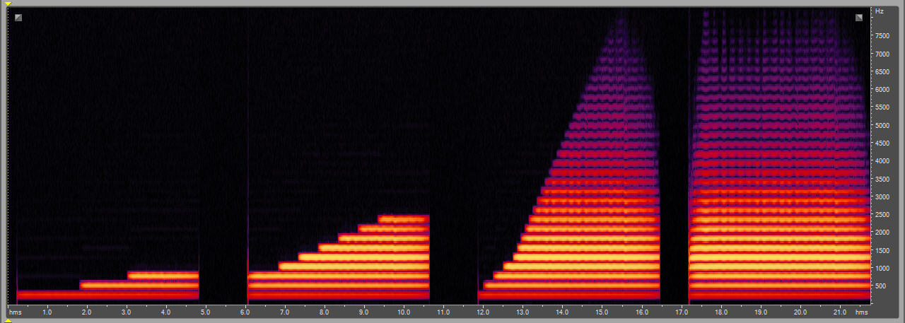
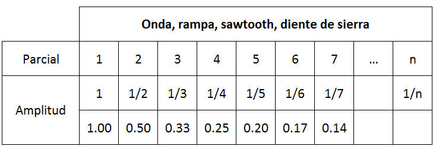
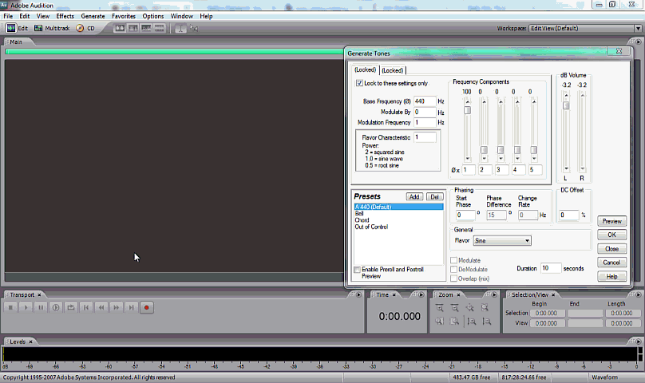

Conocimiento previo
En nuestro curso anterior pusimos en práctica las técnicas de síntesis aditiva para generar señales de audio. En resumidas cuentas ésta técnica consiste en mezclar señales de audio compuestas de formas de onda sinusoidales con amplitudes y frecuencias distintas para obtener una señal compleja. El ejemplo del Dr. Kelly Fitz de cómo reconstruye el sonido de una trompeta es no solo hermoso sino indiscutible:
Visto en un espectrograma apreciaríamos esto:

Así, reconstruir, por ejemplo, la forma de onda sawtooth necesitaríamos "mezclar" (sumar) ondas sinusoidales cuyas frecuencias sean múltiplos enteros ("armónicos") y las amplitudes siguen una fórmula que aritméticamente la podremos simplificar como "la amplitud del primero entre el número de armónico".

Esto hicimos en el Adobe Audition para generar la forma de onda sawtooth con solo 5 parciales:
